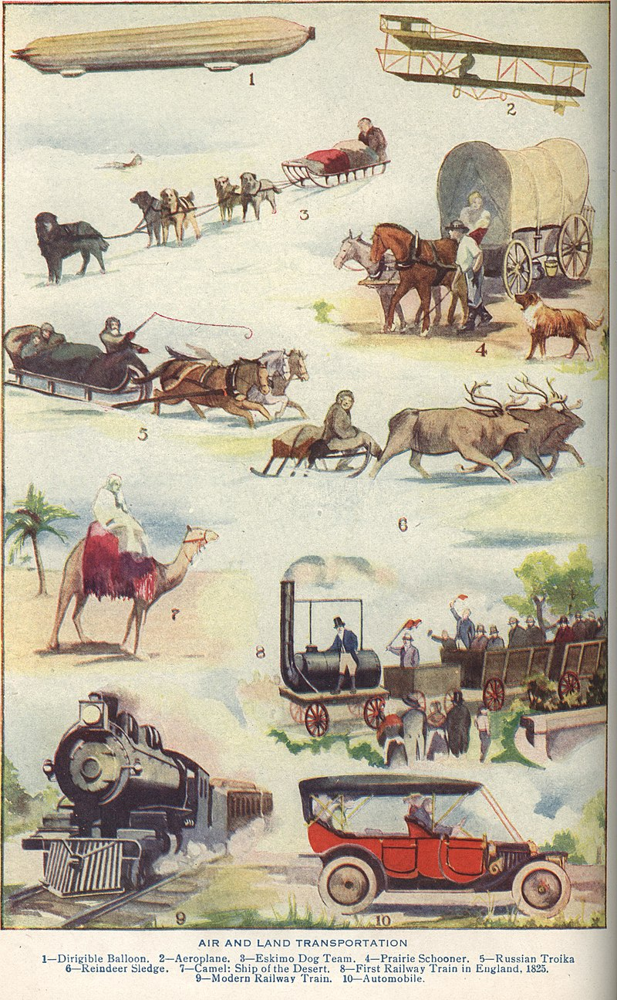

Introduction
Introduction
Topic
The topic about this study is transportation, and this study will specifically focus on people’s transportation mode choice.

Interpretation
Defined by wikipedia, transportation is the intentional movement of humans, animals, and goods from one location to another. Modes of transport include air, land (rail and road), water, cable, pipeline, and space. The field can be divided into infrastructure, vehicles, and operations. Transport enables human trade, which is essential for the development of civilizations.
Means of transportation are any of the different kinds of transport facilities used to carry people or cargo. They may include vehicles, riding animals, and pack animals. Vehicles may include wagons, automobiles, bicycles, buses, trains, trucks, helicopters, watercraft, spacecraft, and aircraft.
As is known to all, transportation plays a crucial role in the society and also in our everyday life. On one hand, from a large scale, transportation is essential for a country’s development. For instance, domestic cargo transportation depends on railway and highway traffic while international transport heavily depends on shipping. It is obvious that transportation level of a region has relationship with its economic development. On the other hand, from a smaller scale, transportation also has a big influence on our daily life. As long as we go out of home, we need means of transportation, involving car, metro, bus, train and air, to carry us to the destination.
In our everyday life, the choice of travel mode varies from person to person. There are hundreds of factors that determine people’s travel mode choice, ranging from family income or marital status to a region’s economic development and urbanization level. For example, from certain study results, people with higher income tend more to drive cars while other people with relatively lower imcome use public transportation more frequently. Also, some small towns and villages do not have metro systems, so people live there may use cars and trucks more. Time cosumed is a important factor that influence people’s choice of transportation mode. Suppose a man lives in a big city with severe traffic jams every day. Then there’s a high probability that he will tend to travel by public transportation, like metro, more frequenly. Now suppose another man who needs to travel to another city for some reasons. Traveling by air is undoubtedly the way that consumes least time. Nonetheless, this is also the most expensive mode of transportation. Thus, he needs to consider the balance between money and time based on his specific situation.
In this study, I will try to figure out factors highly related to people’s choice of transportation. Also, I will analyze people’s attitudes towards certain transportation modes by using text data gathering from Twitter API.
Data Science Questions
There are 10 questions highly related to my topic which will be answered by this project.
- What factors play the biggest role in determining people’s travel mode choice?
- Is cost of the whole travel stage the main factor of travel mode choice?
- Which one has higher relationship with choice of transportation mode, time cosumed or money cost?
- Does household income play a important role in people’s travel mode choice?
- What is the relationship between choice of travel mode and the travel group size?
- Are people’s comments on different modes of transportation similar?
- Is there significant difference of sentiment between people’s comments towards different travel modes?
- Is it possible to predict people’s travel mode choice based on their travel data of different dimensions?
- Is transportation industry affected by COVID-19 pandemic?
- What can we do to improve people’s experience in transportation?